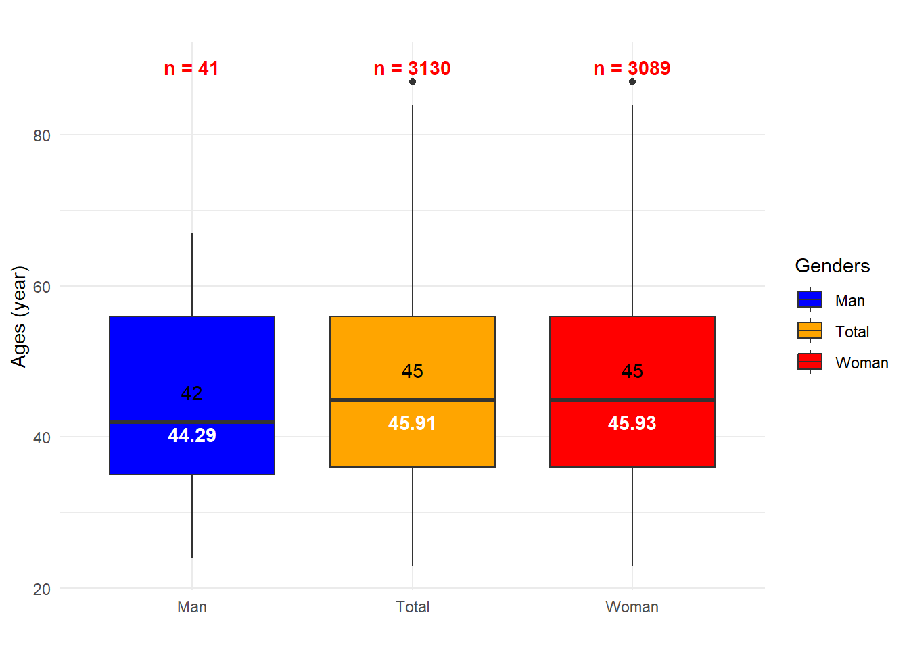
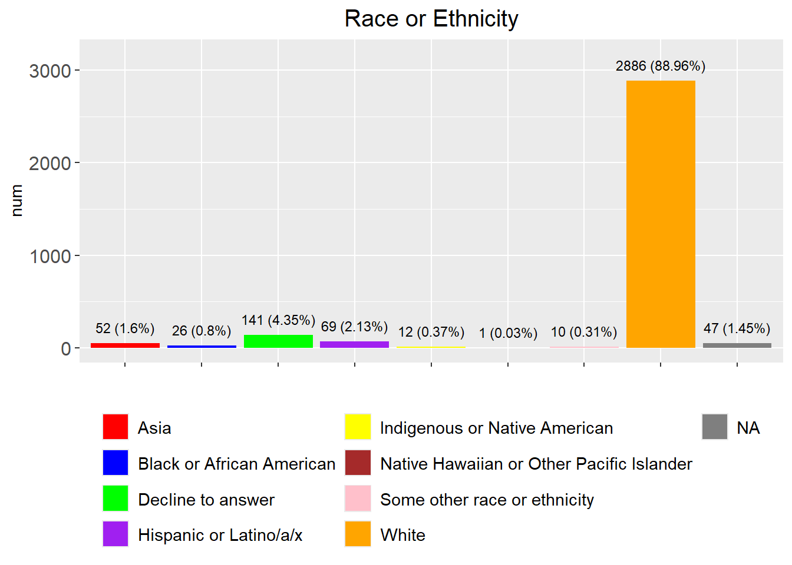
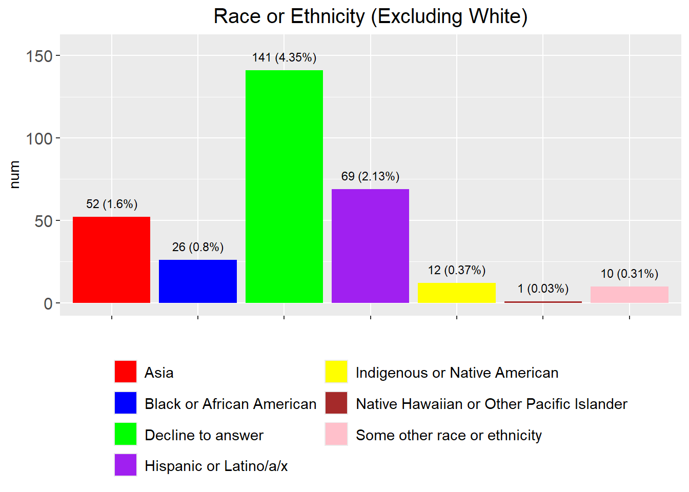
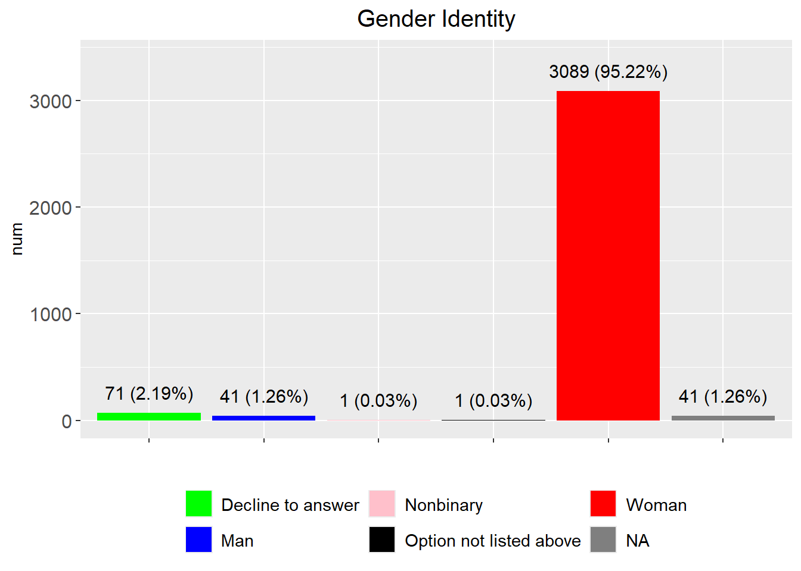
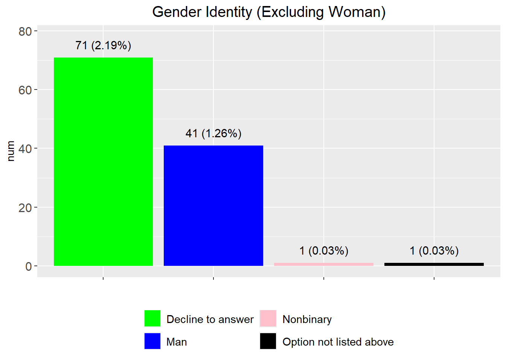
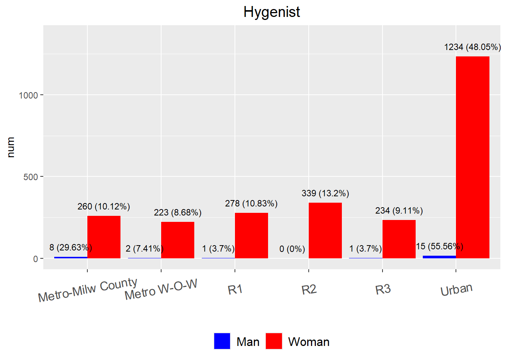
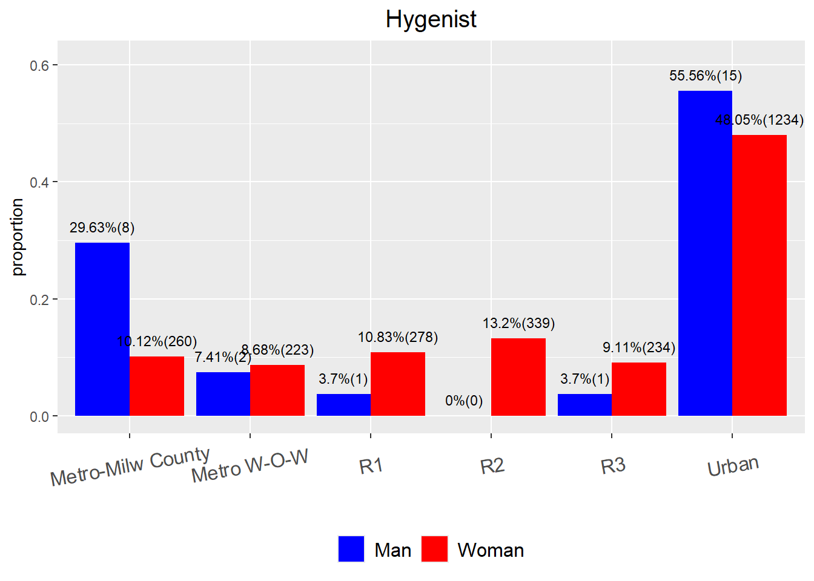
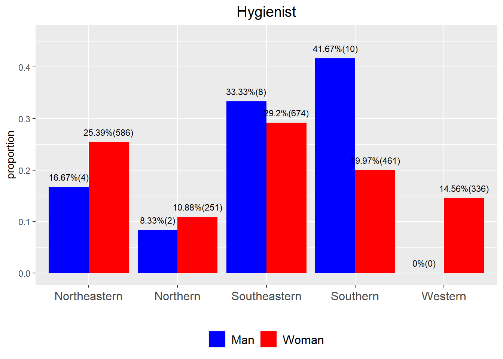

Hygienist analysis in Wisconsin
2024-11-15
Last updated: 2025-04-23
Checks: 6 1
Knit directory: WI_Dental_Survey/
This reproducible R Markdown analysis was created with workflowr (version 1.7.1). The Checks tab describes the reproducibility checks that were applied when the results were created. The Past versions tab lists the development history.
The R Markdown is untracked by Git. To know which version of the R
Markdown file created these results, you’ll want to first commit it to
the Git repo. If you’re still working on the analysis, you can ignore
this warning. When you’re finished, you can run
wflow_publish to commit the R Markdown file and build the
HTML.
Great job! The global environment was empty. Objects defined in the global environment can affect the analysis in your R Markdown file in unknown ways. For reproduciblity it’s best to always run the code in an empty environment.
The command set.seed(20250423) was run prior to running
the code in the R Markdown file. Setting a seed ensures that any results
that rely on randomness, e.g. subsampling or permutations, are
reproducible.
Great job! Recording the operating system, R version, and package versions is critical for reproducibility.
Nice! There were no cached chunks for this analysis, so you can be confident that you successfully produced the results during this run.
Great job! Using relative paths to the files within your workflowr project makes it easier to run your code on other machines.
Great! You are using Git for version control. Tracking code development and connecting the code version to the results is critical for reproducibility.
The results in this page were generated with repository version 08b985c. See the Past versions tab to see a history of the changes made to the R Markdown and HTML files.
Note that you need to be careful to ensure that all relevant files for
the analysis have been committed to Git prior to generating the results
(you can use wflow_publish or
wflow_git_commit). workflowr only checks the R Markdown
file, but you know if there are other scripts or data files that it
depends on. Below is the status of the Git repository when the results
were generated:
Ignored files:
Ignored: analysis/figure/
Untracked files:
Untracked: analysis/2024_0701_survey.Rmd
Untracked: analysis/2024_0701_survey_part1.Rmd
Untracked: analysis/2024_0701_survey_part2.Rmd
Untracked: analysis/2024_0701_survey_part3.Rmd
Untracked: analysis/2024_0701_survey_part3_02_geographicaldistribution.Rmd
Untracked: analysis/2024_0701_survey_part4.Rmd
Untracked: analysis/2024_0701_survry_part3_01_racevsothers.Rmd
Unstaged changes:
Modified: analysis/index.Rmd
Note that any generated files, e.g. HTML, png, CSS, etc., are not included in this status report because it is ok for generated content to have uncommitted changes.
There are no past versions. Publish this analysis with
wflow_publish() to start tracking its development.
Home
questions in the survey
library(dplyr)
library(DT)
#dim(Dental_Hygienist$`Dental H`)
load(file.path(root, "..\\..\\AllCollaboration\\2024\\202407\\Dental_Hygienist_WI.RData"))
variables=colnames(Dental_Hygienist_WI)
data.frame(questions=variables)%>%
datatable(extensions = 'Buttons',
caption = "",
options = list(dom = 'Blfrtip',
buttons = c('copy', 'csv', 'excel', 'pdf', 'print'),
lengthMenu = list(c(10,25,50,-1),
c(10,25,50,"All"))))in total 3244 hygienists in WI (`
Dental Hygienist in Wisconsin==“Yes”`) and 46 questions3244 respond “yes” to
Dental Hygienist in Wisconsin.
age distribution
date_of_birth=Dental_Hygienist_WI$`Date of Birth`
year_of_birth=str_sub(date_of_birth, 1, 4)
ages=2025-as.numeric(year_of_birth)
Dental_Hygienist_WI=Dental_Hygienist_WI %>% mutate(ages=ages)
df <- data.frame(
Genders = c(rep("Man", 41), rep("Woman", 3089), rep("Total", 3130)),
ages = c(
Dental_Hygienist_WI %>% filter(`Gender Identity`=="Man") %>% select(ages)%>% pull(),
Dental_Hygienist_WI %>% filter(`Gender Identity`=="Woman")%>% select(ages)%>% pull() ,
Dental_Hygienist_WI %>% filter(`Gender Identity`=="Man" |`Gender Identity`=="Woman" ) %>% select(ages)%>% pull())
)
# Draw a boxplot
df_counts <- aggregate(ages ~ Genders, data = df, FUN = length)
ggplot(df, aes(x = Genders, y = ages, fill = Genders)) +
geom_boxplot() +
stat_summary(fun = median, geom = "text", aes(label = round(..y.., 2)),
vjust = -1.5, color = "black") + # Median values
stat_summary(fun = mean, geom = "text", aes(label = round(..y.., 2)),
vjust = 2.5, color = "white", fontface = "bold") + # Mean values
geom_text(data = df_counts, aes(x = Genders, y = max(df$ages) + 2,
label = paste("n =", ages)),
color = "red", fontface = "bold") + # Sample size
scale_fill_manual(values = c("Man" = "blue", "Woman" = "red", "Total"="orange")) + # Custom colors
theme_minimal() +
labs(title = "", x = "", y = "Ages (year)")
t.test(x=Dental_Hygienist_WI %>% filter(`Gender Identity`=="Man") %>% select(ages)%>% pull(), y=Dental_Hygienist_WI %>% filter(`Gender Identity`=="Woman")%>% select(ages)%>% pull())
Welch Two Sample t-test
data: Dental_Hygienist_WI %>% filter(`Gender Identity` == "Man") %>% select(ages) %>% pull() and Dental_Hygienist_WI %>% filter(`Gender Identity` == "Woman") %>% select(ages) %>% pull()
t = -0.86237, df = 41.093, p-value = 0.3935
alternative hypothesis: true difference in means is not equal to 0
95 percent confidence interval:
-5.461928 2.192972
sample estimates:
mean of x mean of y
44.29268 45.92716 mean ages in white, median in black and sample size in red
two sample t test suggests no age difference between man and woman.
Race or Ethnicity
race=Dental_Hygienist_WI %>% dplyr::count(`Describe Your Race or Ethnicity`) %>% mutate(prop=round(n/nrow(Dental_Hygienist_WI),4))
asia=c("East Asian", "Filipino", "Hmong", "Laotian", "South Asian") # define south east asia countries
asia_race= race %>% filter(`Describe Your Race or Ethnicity` %in% asia)
race_new=race %>% filter(`Describe Your Race or Ethnicity` %in% asia==F) %>% add_row(`Describe Your Race or Ethnicity`="asia", n=asia_race %>% select(n) %>% sum(), prop=asia_race %>% select(prop) %>% sum()) # combine south east asia countries into one unit
race_new$`Describe Your Race or Ethnicity`[race_new$`Describe Your Race or Ethnicity`=="asia"] <- "Asia"
fig=plot_function("Race or Ethnicity", race_new, legend_rows = 4, var_name = "Describe Your Race or Ethnicity", custom_colors= c("Asia" = "red", "Black or African American" = "blue", "Decline to answer" = "green", "Hispanic or Latino/a/x" = "purple", "Native Hawaiian or Other Pacific Islander"="brown", "Some other race or ethnicity"="pink", "White"="orange", "NA"="black", "Indigenous or Native American"="yellow"))
fig
fig=plot_function("Race or Ethnicity (Excluding White)", race_new %>% filter(`Describe Your Race or Ethnicity`!="White"), legend_rows = 4, var_name = "Describe Your Race or Ethnicity", custom_colors= c("Asia" = "red", "Black or African American" = "blue", "Decline to answer" = "green", "Hispanic or Latino/a/x" = "purple", "Native Hawaiian or Other Pacific Islander"="brown", "Some other race or ethnicity"="pink", "White"="orange", " "="black", "Indigenous or Native American"="yellow"))
fig
race_new$`Describe Your Race or Ethnicity`[is.na(race_new$`Describe Your Race or Ethnicity`)] <- "missing"
race_new %>% arrange(desc(n))%>%
datatable(extensions = 'Buttons',
caption = "",
options = list(dom = 'Blfrtip',
buttons = c('copy', 'csv', 'excel', 'pdf', 'print'),
lengthMenu = list(c(10,25,50,-1),
c(10,25,50,"All"))))cat("total people:", sum(race_new$n), "\n")total people: 3244 ## dual axis plot https://finchstudio.io/blog/ggplot-dual-y-axes/ https://r-graph-gallery.com/line-chart-dual-Y-axis-ggplot2.html # https://stackoverflow.com/questions/3099219/ggplot-with-2-y-axes-on-each-side-and-different-scalesasiaincludes “East Asian”, “Filipino”, “Hmong”, “Laotian”, “South Asian”
Gender Identity
gender=Dental_Hygienist_WI %>% dplyr::count(`Gender Identity`) %>% mutate(prop=round(n/nrow(Dental_Hygienist_WI),4))
fig=plot_function("Gender Identity", gender, legend_rows=2, var_name = "Gender Identity", num_size = 4, custom_colors= c("Woman" = "red","Man"="blue", "Decline to answer" = "green", "Nonbinary"="pink", "Option not listed above"="black"))
fig
fig=plot_function("Gender Identity (Excluding Woman)", gender %>% filter(`Gender Identity`!="Woman"), legend_rows=2, var_name = "Gender Identity", num_size = 4, custom_colors= c("Woman" = "red","Man"="blue", "Decline to answer" = "green", "Nonbinary"="pink", "Option not listed above"="black"))
fig
gender$`Gender Identity`[is.na(gender$`Gender Identity`)]="missing"
gender %>% arrange(desc(n)) %>%
datatable(extensions = 'Buttons',
caption = "",
options = list(dom = 'Blfrtip',
buttons = c('copy', 'csv', 'excel', 'pdf', 'print'),
lengthMenu = list(c(10,25,50,-1),
c(10,25,50,"All"))))cat("total people:", sum(gender$n), "\t")total people: 3244 cat("total man or woman:", sum(gender %>% filter(`Gender Identity`=="Man" | `Gender Identity`=="Woman") %>% select(n)), "\n")total man or woman: 3130 geographical distribution
wisconsin_urban_rural_zip=multiplesheets("C:\\Shengtong\\Research\\OralPublicHealth\\Dental_Emergency_visit\\Wisconsin-Urban-Rural-zip.xlsx")region_code=unique(wisconsin_urban_rural_zip$`Table 1`$`2014 ZCTA-based WURC Code`)
all_code=wisconsin_urban_rural_zip$`Table 1`$`2014 ZCTA-based WURC Code`
all_code[which(all_code=="R2/R1")]="R2" # rename regions
all_code[which(all_code=="Urban/R1")]="Urban"
all_code[which(all_code=="Metro W-O-W/R1")]="Metro W-O-W"
all_code[which(all_code=="R3/R1")]="R3"
all_code[which(all_code=="R3/R2/R1")]="R3"
all_code[which(all_code=="Urban/R2")]="Urban"
all_code[which(all_code=="R1/Urban")]="R1"
wisconsin_urban_rural_zip_data=wisconsin_urban_rural_zip$`Table 1` %>% mutate(new_region_code=all_code)
region_code_update=unique(all_code)
region_code_zip=sapply(region_code_update, function(x) wisconsin_urban_rural_zip_data %>% filter(new_region_code==x) %>% select(`ZCTA/\r\nZIPCode`)) # extract zip codes
Dental_Hygienist_WI %>% filter(!`5-digit Zip code` %in% unlist(region_code_zip)) %>% select(`Dental Hygienist in Wisconsin`, `5-digit Zip code`, City)%>%
datatable(extensions = 'Buttons',
caption = "people not mapped to geo region by zip code",
options = list(dom = 'Blfrtip',
buttons = c('copy', 'csv', 'excel', 'pdf', 'print'),
lengthMenu = list(c(10,25,50,-1),
c(10,25,50,"All"))))cat("people not mapped to geo region by zip code:", nrow(Dental_Hygienist_WI %>% filter(!`5-digit Zip code` %in% unlist(region_code_zip))), "\n")people not mapped to geo region by zip code: 621 Gender Identity
gender_geo=sapply(region_code_zip, function(x) Dental_Hygienist_WI %>% filter(`5-digit Zip code` %in% x) %>% select(`Gender Identity`))
gender_prop=sapply(gender_geo, function(x) c(sum(x=="Man", na.rm = T), sum(x=="Woman", na.rm = T)))
gender_geo_data=data.frame(geo=rep(region_code_update,each=2), num=as.vector(gender_prop), gender=rep(c("Man", "Woman"), length(region_code_update))) %>% drop_na()
man_total=sum(gender_geo_data %>% filter(gender=="Man") %>% select(num) %>% pull())
woman_total=sum(gender_geo_data %>% filter(gender=="Woman") %>% select(num) %>% pull())
prop=numeric()
prop[seq(1,11,by=2)]=gender_geo_data$num[seq(1,11,by=2)]/man_total
prop[seq(2,12,by=2)]=gender_geo_data$num[seq(2,12,by=2)]/woman_total
gender_geo_data=gender_geo_data %>% mutate(prop=round(prop,4))
#colnames(gender_geo_data)[3]="Gender"
fig=side_by_side_barplot(gender_geo_data, angle=10, num_size = 3, x_text_size=12, legend_text_size=12, title="Hygenist", custom_colors=c("Man"="blue", "Woman"="red"))
fig
gender_geo_data =gender_geo_data %>% mutate(n=gender_geo_data$num)
fig=side_by_side_barplot3(gender_geo_data, angle=10, num_size = 3, x_text_size=12, legend_text_size=12, title="Hygenist", custom_colors=c("Man"="blue", "Woman"="red"), fill_var = "gender")
fig
gender_geo_data%>%
datatable(extensions = 'Buttons',
caption = "Hygienist",
options = list(dom = 'Blfrtip',
buttons = c('copy', 'csv', 'excel', 'pdf', 'print'),
lengthMenu = list(c(10,25,50,-1),
c(10,25,50,"All"))))### sum(gender_geo_data$num) is not but should be equal to Dental_Hygienist$`Dental H`%>% filter(`Gender Identity`=="Man" | `Gender Identity`=="Woman") %>% nrow() ??????????
cat("total man or woman mapped to geo regions:", sum(gender_geo_data$num), "||\t")total man or woman mapped to geo regions: 2595 || cat("not mapped to geo regions and thus missed:", 3130-sum(gender_geo_data$num), "\n")not mapped to geo regions and thus missed: 535 only keep
ManandWomanand ignore other responses
DHS zone analysis
load(file.path(root, "..\\..\\AllCollaboration\\2024\\202407\\zip_code_details.RData"))
zip_code_county_zone=zip_codes_and_counties %>% left_join(dhs_zones, by="county")
zip_code_county_zone$zip_code=as.character(zip_code_county_zone$zip_code)
Hygienist_in_WI =Dental_Hygienist_WI%>% mutate(zip_code = Dental_Hygienist_WI$`5-digit Zip code`)
Hygienist_in_WI=Hygienist_in_WI %>% left_join(zip_code_county_zone, by="zip_code")gender distribution
zones=unique(Hygienist_in_WI$zone)
zones=zones[is.na(zones)==F]
gender_zones=sapply(zones, function(x) Hygienist_in_WI %>% filter(zone %in% x) %>% select(`Gender Identity`))
gender_prop=sapply(gender_zones, function(x) c(sum(x=="Man", na.rm=T), sum(x=="Woman", na.rm=T)))
gender_zones_data=data.frame(geo=rep(zones,each=2), n=as.vector(gender_prop), gender=rep(c("Man", "Woman"), length(zones))) %>% drop_na()
man_total=sum(gender_zones_data %>% filter(gender=="Man") %>% select(n) %>% pull())
woman_total=sum(gender_zones_data %>% filter(gender=="Woman") %>% select(n) %>% pull())
prop=numeric()
prop[seq(1,9,by=2)]=gender_zones_data$n[seq(1,11,by=2)]/man_total
prop[seq(2,10,by=2)]=gender_zones_data$n[seq(2,12,by=2)]/woman_total
gender_zones_data=gender_zones_data %>% mutate(prop=round(prop,4))
gender_zones_data=gender_zones_data %>% mutate(num=gender_zones_data$n)
fig=side_by_side_barplot(gender_zones_data, angle=0, num_size = 3, x_text_size=12, legend_text_size=12, title="Hygienist", custom_colors= c("Woman" = "red", "Man" = "blue"))
fig
fig=side_by_side_barplot3(gender_zones_data, angle=0, num_size = 3, x_text_size=12, legend_text_size=12, title="Hygienist", custom_colors= c("Woman" = "red", "Man" = "blue"), x_var="geo", fill_var = "gender")
fig
gender_zones_data%>%
datatable(extensions = 'Buttons',
caption = "Hygienist",
options = list(dom = 'Blfrtip',
buttons = c('copy', 'csv', 'excel', 'pdf', 'print'),
lengthMenu = list(c(10,25,50,-1),
c(10,25,50,"All"))))cat("total man or woman mapped to zones:", sum(gender_zones_data$n), "||\t")total man or woman mapped to zones: 2332 || cat("total man or woman not mapped to zone regions and thus missed", 3130-sum(gender_zones_data$n), "\n")total man or woman not mapped to zone regions and thus missed 798
sessionInfo()R version 4.3.2 (2023-10-31 ucrt)
Platform: x86_64-w64-mingw32/x64 (64-bit)
Running under: Windows 10 x64 (build 19045)
Matrix products: default
locale:
[1] LC_COLLATE=English_United States.utf8
[2] LC_CTYPE=English_United States.utf8
[3] LC_MONETARY=English_United States.utf8
[4] LC_NUMERIC=C
[5] LC_TIME=English_United States.utf8
time zone: America/Chicago
tzcode source: internal
attached base packages:
[1] grid stats graphics grDevices utils datasets methods
[8] base
other attached packages:
[1] VennDiagram_1.7.3 futile.logger_1.4.3 condsurv_1.0.0
[4] devtools_2.4.5 usethis_3.1.0 tidycmprsk_1.1.0
[7] gtsummary_2.0.4 ggsurvfit_1.1.0 irr_0.84.1
[10] lpSolve_5.6.23 readxl_1.4.3 cowplot_1.1.3
[13] matrixStats_1.5.0 gridExtra_2.3 DT_0.33
[16] rstatix_0.7.2 ggpubr_0.6.0 kableExtra_1.4.0
[19] lubridate_1.9.4 forcats_1.0.0 stringr_1.5.1
[22] dplyr_1.1.4 purrr_1.0.2 readr_2.1.4
[25] tidyr_1.3.1 tibble_3.2.1 ggplot2_3.5.1
[28] tidyverse_2.0.0 rprojroot_2.0.4
loaded via a namespace (and not attached):
[1] formatR_1.14 remotes_2.5.0 rlang_1.1.2
[4] magrittr_2.0.3 git2r_0.35.0 compiler_4.3.2
[7] systemfonts_1.2.1 vctrs_0.6.5 profvis_0.4.0
[10] pkgconfig_2.0.3 fastmap_1.2.0 backports_1.5.0
[13] ellipsis_0.3.2 labeling_0.4.3 promises_1.3.2
[16] rmarkdown_2.29 sessioninfo_1.2.2 tzdb_0.4.0
[19] xfun_0.50.6 cachem_1.1.0 jsonlite_1.8.9
[22] later_1.4.1 broom_1.0.7 R6_2.5.1
[25] bslib_0.9.0 stringi_1.8.3 car_3.1-3
[28] pkgload_1.4.0 jquerylib_0.1.4 cellranger_1.1.0
[31] Rcpp_1.0.11 knitr_1.49 httpuv_1.6.15
[34] Matrix_1.6-1.1 splines_4.3.2 timechange_0.3.0
[37] tidyselect_1.2.1 rstudioapi_0.17.1 abind_1.4-8
[40] yaml_2.3.8 miniUI_0.1.1.1 pkgbuild_1.4.6
[43] lattice_0.21-9 shiny_1.10.0 withr_3.0.2
[46] evaluate_1.0.3 lambda.r_1.2.4 survival_3.8-3
[49] urlchecker_1.0.1 xml2_1.3.6 pillar_1.10.1
[52] carData_3.0-5 generics_0.1.3 hms_1.1.3
[55] munsell_0.5.1 scales_1.3.0 xtable_1.8-4
[58] glue_1.8.0 tools_4.3.2 ggsignif_0.6.4
[61] fs_1.6.5 crosstalk_1.2.1 colorspace_2.1-0
[64] Formula_1.2-5 cli_3.6.2 workflowr_1.7.1
[67] futile.options_1.0.1 viridisLite_0.4.2 svglite_2.1.3
[70] gtable_0.3.6 sass_0.4.9 digest_0.6.33
[73] farver_2.1.2 htmlwidgets_1.6.4 memoise_2.0.1
[76] htmltools_0.5.8.1 lifecycle_1.0.4 mime_0.12